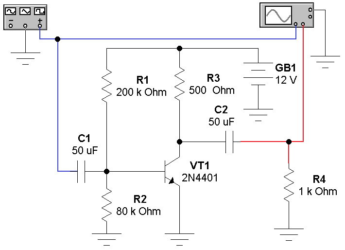
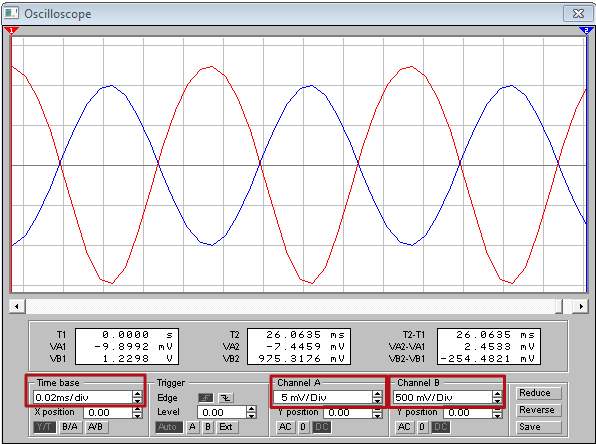

Electronics Workbench
Исследование работы усилительного каскада
в программе
Electronics Workbench
- Запустите программу Electronics Workbench.
- Соберите модель схемы усилительного каскада на биполярных транзисторах: (рис. 1).

Рис. 1 - Модель схемы усилительного каскада на биполярном транзисторе
- Установите свойства элементов схемы (табл. 1).
Для установки свойств:- сделайте двойной щелчок на элементе;
- откройте вкладку (Label, Value или Models);
- установите значения.
Таблица 1
Свойства элементов схемы Обозначение
элементаВкладка Label
(Свойство:Значение)Вкладка Value
(Свойство:Значение)Вкладка Models
(Свойство:Значение)GB1 Label: GB1 Voltage (V): 12 V — C1,
C2Label: C1
Label: C2Capacitance (C): 50 µF — R1 Label: R1 Resistance (R): 200 kΩ — R2 Label: R2 Resistance (R): 80 kΩ — R3 Label: R3 Resistance (R): 500 Ω — R4 Label: R4 Resistance (R): 1 kΩ — VT1 Label: VD1 — Library: 2N
Model: 2N4401 - Закрасьте провод идущий к клемме "+" генератора (к каналу А осциллографа) в синий цвет: сделайте двойной щелчок на проводе и выберите синий цвет. На экране осциллографа осциллограмма входного сигнала будет окрашен в синий цвет.
- Закрасьте провод идущий к каналу B осциллографа в красный цвет.Осциллограмма выходного сигнала будет окрашен в красный цвет.
- На генераторе установить синусоидальный сигнал частотой 10 кГц и амплитудой 10 мВ.
- Сделайте двойной щелчок на осциллографе, чтобы открыть расширенную модель осциллографа.
- Щелкните мышкой на кнопке
 в верхнем правом углу, чтобы включить схему. Через 2-3 секунды повторно щелкните мышкой на кнопке , чтобы выключить схему.
в верхнем правом углу, чтобы включить схему. Через 2-3 секунды повторно щелкните мышкой на кнопке , чтобы выключить схему. - Подберите шаг развертки (Time base) и чувствительности каналов (Channel A/Channel B) для получения четкого изображения не менее 2-х периодов сигналов (рис. 2).

Рис. 2 - Настройка шаг развертки и чувствительности каналов
- Зарисуйте осциллограммы (снимите скриншот) на входе (канал А) и выходе (канал В) усилительного каскада.
- Определите амплитуды входного и выходного сигналов.
- Вычислите коэффициент усиления по напряжению KU:
KU =Uвых / Uвх.
- Результаты запишите в рабочей тетради (табл. 2).
- Получите осциллограммы сигналов на входе (канал А) и на выходе (канал В) усилительного каскада при Uвх=100 мВ. Зарисуйте осциллограммы (снимите скриншот).
- Восстановить на генераторе амплитуду 10 мВ.
- Получите осциллограммы сигналов на входе (канал А) и на выходе (канал В) усилительного каскада при R1=20 кОм и R2=80 кОм. Зарисуйте осциллограммы (снимите скриншот).
- Получите осциллограммы сигналов на входе (канал А) и на выходе (канал В) усилительного каскада при R1=20 кОм и R2=2 кОм. Зарисуйте осциллограммы (снимите скриншот).
- Проанализируйте полученные результаты.
Таблица 2
| № изм. | 1 | 2 | 3 | 4 |
|---|---|---|---|---|
| Амплитуда входного сигнала Uвх, мВ | 10 | 100 | 10 | 10 |
| Частота входного сигнала f, кГц | 10 | 10 | 10 | 10 |
| Сопротивление резистора R1, кОм | 200 | 200 | 20 | 20 |
| Сопротивление резистора R2, кОм | 80 | 80 | 80 | 2 |
| Амплитуда выходного сигнала Uвых, мВ | ||||
| Коэффициент усиления по напряжению KU |